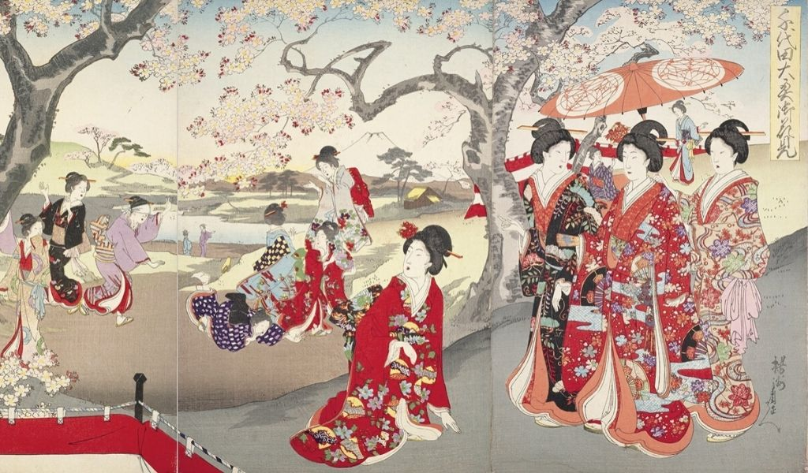

La culture nippone apprécie les choses simples de la vie ainsi que le lien sacré qui unit l’Homme à la nature. Ainsi, l’estampe japonaise voit le jour à l’Ère Edo à travers le mouvement artistique de l’ukiyo-e. Mouvement chargé de connotations bouddhistes traduisant l’impermanence d’un monde flottant. Ces peintures issues de techniques de gravure sur bois représentent le plus souvent des scènes du quotidien comme de jolies courtisanes, des artistes du théâtre kabuki, des éléments naturels, des créatures fantastiques ou encore des séquences érotiques nommées shunga. En réalité, les sujets choisis étaient en lien avec les centres d’intérêt de la bourgeoisie urbaine, en pleine éclosion pendant le shogunat Tokugawa. L’art traditionnel de l’estampe japonaise devient particulièrement populaire à Edo avant de s’essouffler vers le 18e siècle. En 1790, finis les provocations politiques et les thèmes ollé-ollé, les estampes sont censurées par le bakufu (gouvernement militaire).
Une des estampes les plus célèbres, au Japon comme dans le monde entier, reste bien entendu La Grande Vague de Kanagawa. Chef d'œuvre du peintre Hokusai, elle incarne parfaitement les principes de l'art ukiyo-e. Pour percer à jour les secrets qui se cachent derrière ce tableau, rendez-vous sur notre article dédié à l'analyse de La Grande Vague de Kanagawa. A la fin du 19 e siècle, nous voilà face à un art jugé vulgaire par les Japonais à cause des techniques d’impression de masse, des thèmes censurés et des sujets un peu trop banaux. Or, avec l’ouverture du pays vers le reste du monde et l’influence du japonisme, les estampes séduisent de nombreux Occidentaux. Si bien que les grands peintres impressionnistes comme Paul Cézanne ou Gauguin s’en inspirent dans leurs œuvres.